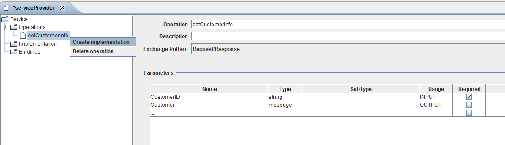

Implementation

Topic content
Description
In the area Web service Provider > Implementation, the definition of the completed mapping in the Orchestra for a service operation will be made.
Creation and define an implementation
To add an implementation for your wen service provider:
1. Open your service provider from area Scenario Elements > Service Provider.
2. Open the context menu Service > Operations of operation of the service provider to be implemented and click [Create implementation]

3. To define your new webservice implementation click on the button [Edit mapping]
4. Choose the desired technical component for the implementation on tab [Technical Mapping].
5. Finally, click on [OK] to save your changes.
|
Note: You can do the assignment for the request/response variables on the tabs Request mapping and Response mapping here (if applicable). For this purpose, the procedure is analogous to the request/response mapping in the process model. For further information, please read process and request variables. |